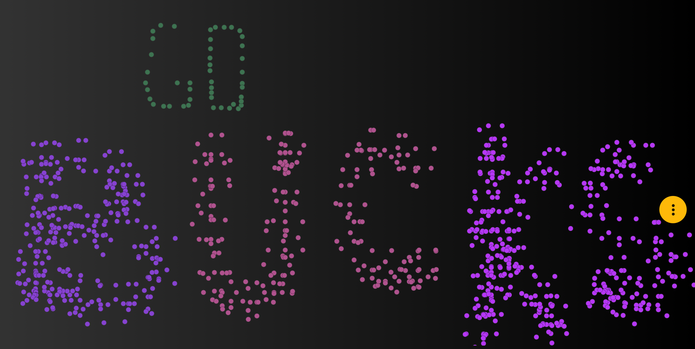

Clustering, classification and data mining
Clustering aims to estimate subpopulations from datasets, and classification refer to situations where training datasets of known populations are already available, independent from the current dataset. This particular approach can be very subjective because our own eyes might detect groupings on our own that do not match what the algorithms produce. The question then becomes, change the algorithm, or change our expectations?
- Clustering and classification are methods used to organize data based on similarity or group membership.
- Clustering is unsupervised: groups are discovered from the data without prior labels.
- Classification is supervised: new observations are assigned to predefined groups based on training data.
- Definitions and scopes:
- Cluster: a subset of objects that are more similar to each other than to objects in other clusters.
- Classification: mapping objects to known categories or classes.
- Distance or similarity measures (e.g., Euclidean, Manhattan, Minkowski) are key to clustering.
- Agglomerative Hierarchical Clustering: builds a tree (dendrogram) of nested clusters.
- Starts with each observation as a single cluster.
- Iteratively merges the two closest clusters based on a linkage criterion:
- Single linkage: minimum distance between cluster members
- Complete linkage: maximum distance between cluster members
- Average linkage: average distance between cluster members
- Dendrograms help visualize cluster relationships and choose the number of clusters.
- k-means and nonhierarchical partitioning:
- k-means partitions n observations into k clusters by minimizing the within-cluster sum of squares (WCSS):
\[
\sum_{j=1}^{k} \sum_{x_i \in C_j} \| x_i - \mu_j \|^2
\]
where \(\mu_j\) is the centroid of cluster \(C_j\).
- Algorithm: initialize centroids, assign points to nearest centroid, update centroids, repeat until convergence.
- Variants include k-medoids (centroid must be an actual data point) and fuzzy c-means (soft clustering).
Here is a really good website to visualize different types of clustering, which can be a little more helpful than just word definitions, and shows a step by step of the analysis (I am a Buckeyes fan):

- Supervised Classification:
- Assigns new observations to known groups using labeled training data.
- Multivariate normal clusters: assume each class follows a multivariate normal distribution.
- Random Forests:
- An ensemble learning method for classification (and regression) using many decision trees.
- Each tree is trained on a bootstrap sample of the data, and only a random subset of predictors is considered at each split.
- Predictions are made by majority vote across all trees for classification, or average for regression.
- Advantages: robust to overfitting, handles high-dimensional data, provides variable importance measures.